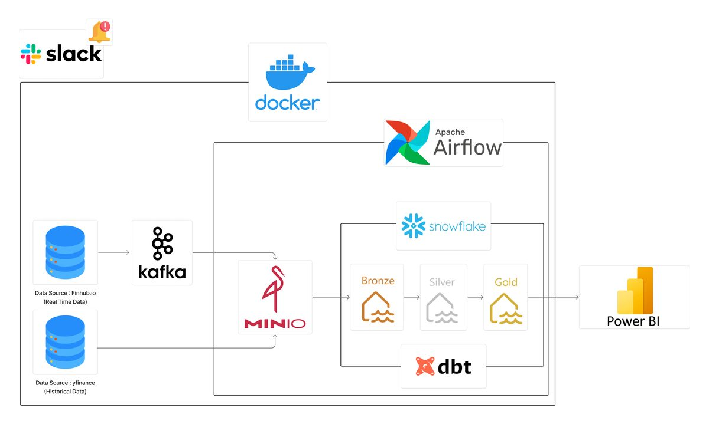
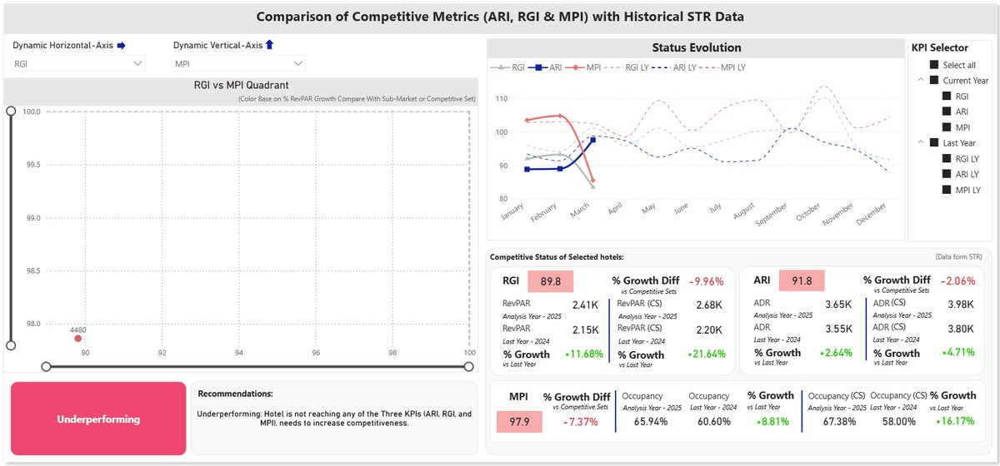
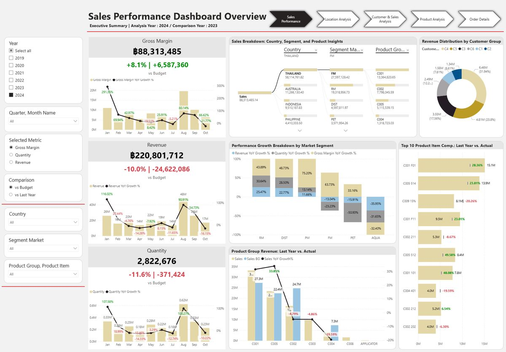

Five years of making numbers agree.5 ปีของการทำให้ตัวเลขตรงกัน
Four jobs, newest first: shared KPIs and dbt models, BI for 500+ hotels, and data people could finally trust. Told with no company data. After them, the things I build on my own, which you can open and try. Where AI helped, it says how.งานประจำ 4 ที่ เรียงจากล่าสุด: KPI ที่ทุกทีมใช้ร่วมกันและ dbt model, BI ให้โรงแรม 500+ แห่ง และข้อมูลที่คนกลับมาเชื่อได้ เล่าโดยไม่มีข้อมูลบริษัท ต่อด้วยงานที่ผมสร้างเอง ซึ่งเปิดดูและลองได้ ถ้า AI ช่วย ก็บอกว่าช่วยตรงไหน
Data Analyst (analytics engineering scope), Jul 2026 to nowData Analyst (งานสาย analytics engineering) ก.ค. 2026 ถึงปัจจุบัน
One set of numbers every team trustsตัวเลขชุดเดียวที่ทุกทีมเชื่อ
- Defining business KPIs with each team so there is one source of truthกำหนด KPI กับแต่ละทีม ให้มีแหล่งความจริงเดียว
- Moving report logic into a shared dbt project on Redshift, with reports written as code in Evidenceย้าย logic ของรายงานเข้า dbt project กลางบน Redshift และเขียนรายงานเป็นโค้ดด้วย Evidence
- Data-quality checks, a data dictionary, and training so teams can serve themselvesตรวจคุณภาพข้อมูล ทำ data dictionary และสอนให้ทีมดึงข้อมูลเองได้
BI Analyst, Feb 2024 to Jun 2026BI Analyst ก.พ. 2024 ถึง มิ.ย. 2026
Three regions, one view of 500+ hotels3 ภูมิภาค มุมมองเดียวของโรงแรม 500+ แห่ง
- Brought Europe, Australia and Thailand into one performance dashboardรวมยุโรป ออสเตรเลีย และไทยไว้ใน dashboard เดียว
- Performance against budget and forecast, with a watchlist for hotels that need attentionผลงานเทียบงบและพยากรณ์ พร้อม watchlist สำหรับโรงแรมที่ต้องดูแล
- Competitor benchmarking, and dashboards that load 30% faster after SQL tuningเทียบกับคู่แข่ง และทำให้ dashboard โหลดเร็วขึ้น 30% ด้วยการปรับ SQL
- Helped move the data lake from AWS to GCP (medallion layers, Airflow, dbt)ช่วยย้าย data lake จาก AWS ไป GCP (medallion, Airflow, dbt)
Data Analyst, Jul 2022 to Aug 2023Data Analyst ก.ค. 2022 ถึง ส.ค. 2023
From 80% to 100% data accuracyความถูกต้องของข้อมูลจาก 80% เป็น 100%
- Matched an e-commerce client's GA4 data to its backend, taking accuracy from 80% to 100%จับคู่ข้อมูล GA4 ของลูกค้า e-commerce กับระบบหลังบ้าน ความถูกต้องจาก 80% เป็น 100%
- Website, campaign and user-experience analysis for e-commerce, banking, real estate and insurance clientsวิเคราะห์เว็บไซต์ แคมเปญ และประสบการณ์ผู้ใช้ ให้ลูกค้า e-commerce ธนาคาร อสังหาฯ และประกัน
Data Analyst, Oct 2021 to Jun 2022Data Analyst ต.ค. 2021 ถึง มิ.ย. 2022
From 60% to 90% raw data accuracyความถูกต้องของข้อมูลดิบจาก 60% เป็น 90%
- Built an operational reporting system that raised raw data accuracy from 60% to 90%สร้างระบบรายงานที่ทำให้ข้อมูลดิบถูกต้องขึ้นจาก 60% เป็น 90%
- Power BI for the audit team, and carrier and vessel performance analysis that helped cut customer costsPower BI ให้ทีม audit และวิเคราะห์ผลงานของผู้ขนส่งและเรือ เพื่อลดต้นทุนให้ลูกค้า
Echo, an AI data agent for your spreadsheetEcho ผู้ช่วย AI สำหรับ spreadsheet ของคุณ
Turns an analysis-ready spreadsheet into a morning recap with a written brief. A chat answers follow-up questions in plain language and opens every answer to its SQL and source rows. Numbers in the brief are checked against the data before you see them, and it declines questions the data can't support.เปลี่ยน spreadsheet ที่พร้อมวิเคราะห์ให้เป็นสรุปผลแบบข้อความทุกเช้า มีแชตตอบคำถามต่อด้วยภาษาธรรมดา และเปิดดู SQL กับแถวข้อมูลต้นทางของทุกคำตอบได้ ตัวเลขในสรุปถูกตรวจกับข้อมูลก่อนถึงมือคุณ และปฏิเสธคำถามที่ข้อมูลตอบไม่ได้
Real-time stock data pipelineData pipeline หุ้นแบบเรียลไทม์
From a market API through Kafka and Airflow into Snowflake, modelled with dbt and shown on a live dashboard. Streaming and batch side by side.จาก API ตลาดหุ้น ผ่าน Kafka และ Airflow เข้า Snowflake ทำโมเดลด้วย dbt และแสดงบน dashboard สด มีทั้ง streaming และ batch

Hotel analytics dashboardDashboard วิเคราะห์โรงแรม
Hotel performance against last year, budget and a competitive set, built on a star-schema model with time-intelligence DAX.ผลงานโรงแรมเทียบปีก่อน งบประมาณ และกลุ่มคู่แข่ง สร้างบนโมเดล star schema และ DAX ด้านเวลา

Sales performance trackerติดตามผลงานการขาย
Five pages that tell a retail story: overview, location, customer, product and orders.5 หน้าเล่าเรื่องธุรกิจค้าปลีก: ภาพรวม สาขา ลูกค้า สินค้า และคำสั่งซื้อ

Street Fighter character selectหน้าเลือกตัวละคร Street Fighter
A playful test of newer Power BI features: button slicers, SVG visuals and model relationships.ทดลองฟีเจอร์ใหม่ของ Power BI แบบสนุก ๆ: button slicer, ภาพ SVG และความสัมพันธ์ของโมเดล
Data engineer certification projectโปรเจกต์สอบใบรับรอง Data Engineer
A pipeline that merges several messy datasets into one analysis-ready table.pipeline ที่รวมข้อมูลรก ๆ หลายชุดให้เป็นตารางเดียวที่พร้อมวิเคราะห์
Data analyst certification: product salesใบรับรอง Data Analyst: ยอดขายสินค้า
Exploratory analysis of retail sales to find trends and seasonality.วิเคราะห์ยอดขายค้าปลีกเพื่อหาเทรนด์และฤดูกาล